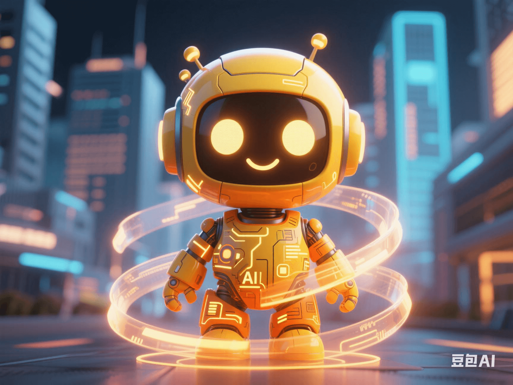

Google Gemini 2.5 Is Free: Why Is It More Dangerous Than ChatGPT?
PeaceLove.Top Insights :2025-04-19
🚨 Google Gemini 2.5 Is Free! Why Is It More Dangerous Than ChatGPT? 🤖💥
In the era of rapid AI evolution, the most explosive news in 2025 is that Google has officially opened free access to the Gemini 2.5 model! 😮🌐 A technological competition for AI dominance has begun. However, while many are excited, some experts have sounded the alarm: 'Gemini 2.5 may be more dangerous than ChatGPT.' Let's find out why.
🥊 The AI Model Competition Heats Up: Gemini vs ChatGPT
Currently, the two most prominent generative AI giants globally are **OpenAI (ChatGPT) and Google DeepMind (Gemini)**. The release of Gemini 2.5 marks Google's full-scale counterattack in the AI field, unleashing its 'ultimate weapon' 💣.
| Comparison Dimension | ChatGPT (GPT-4) | Gemini 2.5 |
|---|---|---|
| Multimodal Capability 🎨 | Strong (text + image) | Even stronger (text + image + audio + code) |
| Context Memory 📚 | Supports 32K context | Supports up to 1M Token, with ultra-long memory ⚡ |
| Reasoning Ability 🧠 | Relatively strong | Stronger than GPT-4, especially in mathematics and logic 📐 |
| Availability 🛠 | Mainly paid | Free to use 🔥 |
It seems great, right? 🍭 But problems also arise...
⚠️ Why Is It More 'Dangerous'? The Ethical Risks of Technology Are Emerging
1️⃣ Greater Risk of Abuse: Free + Powerful = A Feast for the Black Market? 🧨
The free strategy of Gemini 2.5, although a blessing for users 🎁, may also become a toolbox for malicious users.
- More realistic deepfake video generation 🎭
- More difficult-to-identify automated phishing emails ✉️
- More efficient deep-level social manipulation and public opinion guidance 🗳️
As a scholar pointed out: 'An unprotected powerful AI may be more dangerous than a virus.' ☠️
2️⃣ The Problem of Algorithmic 'Bias' Still Exists 🤔⚖️
Although Gemini has introduced a larger amount of data in training, the bias has not truly disappeared. From gender stereotypes to racially-biased responses, AI is still 'unconsciously' amplifying the problems in human society.
🤖: 'Nurses are women, and programmers are men.' User: '???' 😤 This kind of silent bias will have a profound impact on education, the workplace, and public opinion.
3️⃣ Information Overload and the Collapse of Authenticity 🌀
Gemini 2.5 has a stronger 'pseudo-original' ability and can generate extremely realistic news, blogs, and even scientific research papers! 📄💡 Once used to create false information, the 'facts' you see may be completely fabricated illusions by AI. 🕳️🐇 'A world where truth and falsehood are hard to distinguish is moving from science fiction into reality.'
🧩 Behind the Technological Breakthrough: The Call for AI Ethics Is Growing Louder
As the 'arms race' of AI models intensifies, the global call for AI ethical governance is getting louder 📣:
- 🇪🇺 The EU's 'AI Act' is in progress, restricting the use of high-risk AI models.
- 🇺🇸 US technology ethics think-tanks are calling for the filing and review of 'freely-available' models.
- 🌏 Many countries are proposing to establish an 'AI ethical regulatory body' to ensure transparency and controllability.
Because once AI's capabilities exceed the scope of supervision, human society will face the triple crisis of **'information pollution, moral ambiguity, and loss of control'**. ⚖️💻🌫️
🗣️ How Should Users Respond to This AI 'New Normal'? 💡
- ✅ Enhance media literacy: Don't blindly trust the content generated by AI.
- 🔍 Identify the source of information: When seeing amazing information, verify the source first. 🕵️
- 📵 Reflect on the way of use: AI can help you, but it cannot replace your thinking.
- 🤝 Promote the coexistence of AI inclusiveness and safety: AI should serve humanity, not enslave it.
✍️ Conclusion
The free access to Gemini 2.5 is undoubtedly a technological miracle and an ethical test. While applauding the evolution of AI 👏, we must also learn to question and be vigilant 🔍. The future of technology is not just about being'stronger' but also 'better'-moving forward with responsibility can make AI truly a partner of human civilization, not a nightmare. 🌱🧠💖